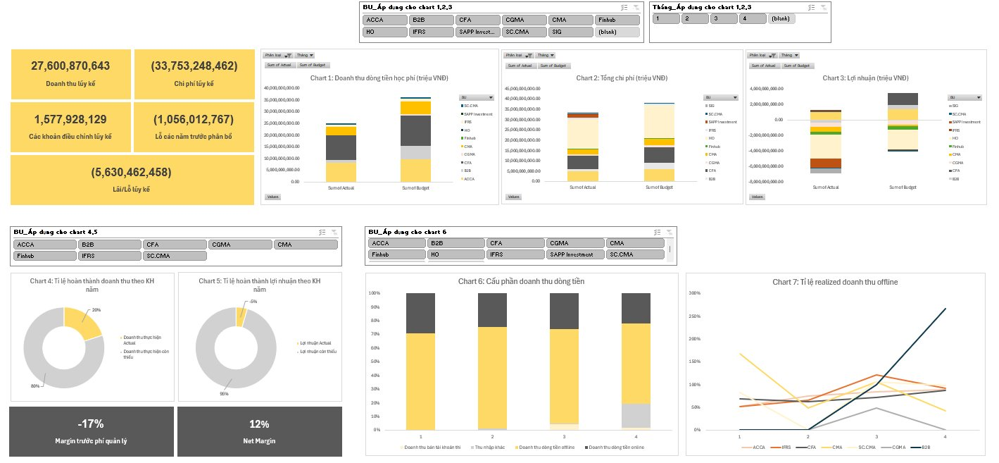
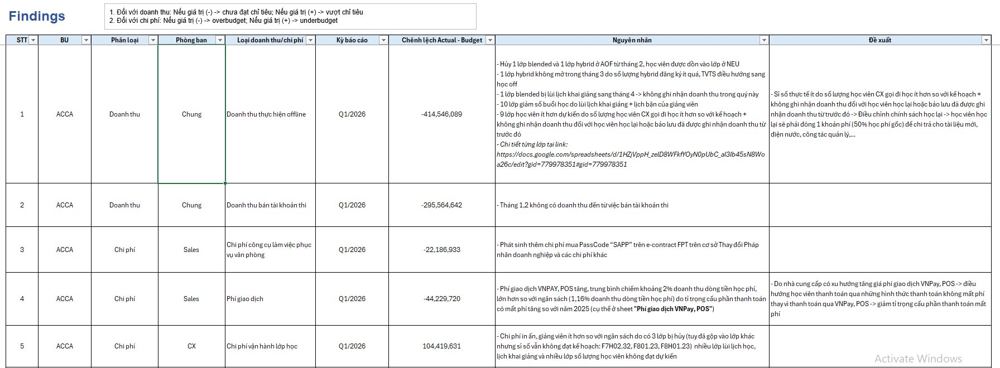
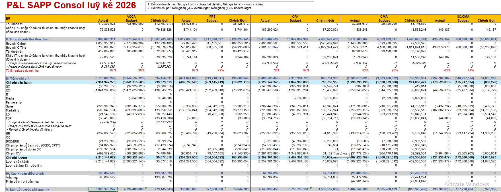
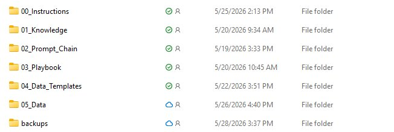

  <!-- TAB 2: AI vào Báo cáo Quản trị -->
  <div class="deck-wrapper" id="tab2">
  <main class="deck" id="deck2">

    <section class="slide active">
      <div class="eyebrow">BÁO CÁO QUẢN TRỊ · AI</div>
      <h1>Từ 3 ngày để trình bày dashboard và phân tích xuống còn 2 ngày</h1>
      <p class="subtitle">Hành trình áp dụng AI vào quy trình làm báo cáo quản trị tại SAPP — từ Excel thuần đến dashboard tự động cho 11 BU.</p>
      <div class="hero-meta">
        <div class="pill">11 Business Units</div>
        <div class="pill">8 tab phân tích</div>
        <div class="pill">Dữ liệu T1–T4/2026</div>
      </div>
      <div class="metrics">
        <div class="metric"><strong>3 ngày</strong><span>Thời gian làm báo cáo trước đây</span></div>
        <div class="metric"><strong>2 ngày</strong><span>Sau khi áp dụng Cowork</span></div>
        <div class="metric"><strong>–33%</strong><span>Thời gian xử lý dữ liệu thủ công</span></div>
        <div class="metric"><strong>real-time</strong><span>Câu hỏi BOD trả lời ngay tại chỗ</span></div>
      </div>
    </section>

    <section class="slide">
      <div class="eyebrow">VẤN ĐỀ</div>
      <h2>3 ngày làm báo cáo — nhưng không phải phân tích</h2>
      <div class="two-col">
        <div class="box">
          <div class="tag">Quy trình cũ</div>
          <ul class="list">
            <li>Tạo dashboard thủ công bằng pivot trên Excel — tốn nhiều thời gian sửa lại file data raw cho đúng format để có thể dùng pivot.</li>
            <li>Nhiều nội dung không thể trình bày linh hoạt do giới hạn cố hữu của Excel.</li>
            <li>Phải tự dò tìm các điểm bất thường giữa hàng loạt dòng số.</li>
            <li>Viết nhận xét dựa trên cảm tính và kinh nghiệm cá nhân.</li>
          </ul>
        </div>
        <div class="box">
          <div class="tag">Hệ quả</div>
          <ul class="list">
            <li>Khó xem một vấn đề theo nhiều chiều — muốn nhìn góc khác là phải tạo data mới, vẽ chart mới.</li>
            <li>BOD hỏi thêm một câu ngoài báo cáo → team phải tra lại file gốc, mất thêm nửa buổi.</li>
            <li>Nhiều khi khó cho BOD trong việc ra quyết định do phần trình bày chưa thực sự khoa học, dễ nhìn.</li>
            <li>Khó scale khi số lượng BU hoặc tần suất báo cáo tăng lên.</li>
          </ul>
        </div>
      </div>
      <div class="visual-grid" style="margin-top: 18px;">
        <div class="visual-card">
          <span class="compare-label">Dashboard cũ trên Excel</span>
          
        </div>
        <div class="visual-card">
          <span class="compare-label">Findings phải gõ tay</span>
          
        </div>
        <div class="visual-card">
          <span class="compare-label">P&amp;L Consol ghép thủ công</span>
          
        </div>
      </div>
    </section>

    <section class="slide">
      <div class="eyebrow">BƯỚC 1</div>
      <h2>Claude in Excel — cải thiện nhưng vẫn bị giới hạn</h2>
      <div class="grid-3">
        <div class="card">
          <div class="tag">Lợi ích</div>
          <h3>Tự phát hiện điểm bất thường</h3>
          <p>Claude quét toàn bộ bảng số, tự highlight các dòng/cột có biến động bất thường, vượt ngưỡng hoặc lệch xu hướng — không cần dò tay từng ô.</p>
        </div>
        <div class="card">
          <div class="tag">Lợi ích</div>
          <h3>Nhận xét tổng quan tự động</h3>
          <p>Tóm tắt và viết nhận xét tổng quan theo từng dòng số. Nhân sự chỉ cần đọc lại, chỉnh sửa cho phù hợp với ngữ cảnh — không phải viết từ đầu. Thời gian giảm từ 3 ngày xuống còn khoảng 2 ngày.</p>
        </div>
        <div class="card">
          <div class="tag">Giới hạn</div>
          <h3>Vẫn bị trói bởi Excel</h3>
          <p>Không tạo được dashboard tương tác, không lọc linh hoạt theo BU hay kỳ, không trình bày được đa chiều. Chart vẫn phải vẽ trong Excel với các giới hạn cố hữu.</p>
        </div>
      </div>
    </section>

    <section class="slide">
      <div class="eyebrow">BƯỚC 2</div>
      <h2>Chuyển sang Claude AI Cowork — cách làm</h2>
      <div class="grid-2" style="align-items: stretch;">
        <div class="card">
          <div class="tag">Bước 1 · Dựng folder dự án</div>
          <h3>Mỗi báo cáo là một dự án có cấu trúc rõ</h3>
          <p>Tạo folder dự án, bên trong gồm các folder con:</p>
          <ul class="list" style="margin-top: 8px;">
            <li><strong>00_Instructions</strong></li>
            <li><strong>01_Knowledge</strong></li>
            <li><strong>02_Prompt_Chain</strong> · <strong>03_Playbook</strong></li>
            <li><strong>04_Data_Templates</strong> · <strong>05_Data</strong></li>
          </ul>
          <p style="margin-top: 10px;">Ngoài ra viết cho nó 1 file hướng dẫn cách sử dụng và các rules nó cần tuân thủ khi tạo file.</p>
        </div>
        <div class="visual-card" style="justify-content: center;">
          <span class="compare-label">Cấu trúc folder dự án thực tế</span>
          
        </div>
      </div>
      <div class="card" style="margin-top: 14px; width: min(1200px, 100%);">
        <div class="tag">Bước 2 · Lặp lại để hoàn thiện</div>
        <h3>Bản draft đầu chưa hoàn hảo — tiếp tục chỉnh sửa</h3>
        <p>Lần đầu cho ra draft, nhân sự rà soát các thiếu sót về số liệu và trình bày → feedback để AI sửa. <strong>Rules và knowledge được giữ lại</strong> nên các kỳ sau không phải làm lại từ đầu.</p>
      </div>
    </section>

    <section class="slide">
      <div class="eyebrow">BƯỚC 3</div>
      <h2>Hiệu quả khi dùng Claude AI Cowork</h2>
      <div class="grid-2">
        <div class="card">
          <div class="tag">Cách hoạt động</div>
          <h3>Tự trình bày dashboard khoa học &amp; linh hoạt</h3>
          <p>Thay vì nhân sự phải tự vẽ chart trong Excel, Claude AI nhận toàn bộ file nguồn, <strong>tự phát hiện các điểm bất thường, tự đưa ra đề xuất hành động</strong>, và <strong>tự trình bày dashboard một cách khoa học, linh hoạt</strong> — 8 tab, có chart, có bảng, có nhận xét, lọc được real-time theo BU và kỳ.</p>
        </div>
        <div class="card">
          <div class="tag">Phát hiện tự động</div>
          <h3>Không cần đọc từng dòng</h3>
          <p>Dashboard tự highlight bất thường: Finhub burn ratio 1.968% (chi 462M, doanh thu chỉ 23M), CGMA burn ratio 663%. Kèm theo gợi ý hành động cụ thể — không cần ai lọc tay.</p>
        </div>
        <div class="card">
          <div class="tag">Vận hành hằng tháng</div>
          <h3>Chỉ cần cấp data mới — dashboard tự cập nhật</h3>
          <p>Sau khi đã dựng xong folder dự án, <strong>hằng tháng chỉ cần cung cấp data tháng mới theo form chuẩn của các tháng trước</strong> — dashboard tự cập nhật, tự tính run-rate, tự rà bất thường. Không phải build lại, không phải vẽ lại chart, không phải viết lại nhận xét từ đầu.</p>
        </div>
        <div class="card">
          <div class="tag">Tốc độ</div>
          <h3>Từ 3 ngày → 2 ngày</h3>
          <p>Trước đây cần <strong>3 ngày</strong> để trình bày dashboard, phân tích nguyên nhân và đưa ra điều hướng. Nay toàn bộ công việc đó rút xuống còn <strong>2 ngày</strong> — phần thời gian tiết kiệm được dành cho nhân sự <strong>phân tích sâu hơn, nhìn vấn đề ở nhiều khía cạnh hơn</strong>, thay vì chỉ chạy theo việc dựng số và vẽ chart.</p>
        </div>
      </div>
      <div class="card" style="width: min(1200px, 100%); margin-top: 18px; text-align: center; background: linear-gradient(135deg, rgba(44, 203, 184, 0.12), rgba(216, 177, 93, 0.08)); border-color: rgba(216, 177, 93, 0.35);">
        <div class="tag">Demo trực tiếp</div>
        <h3 style="margin-bottom: 12px;">Xem dashboard HTML thực tế</h3>
        <p style="margin-bottom: 16px;">Dashboard KQKD 2026 của 11 BU — được tạo hoàn toàn bằng Claude Cowork từ file dữ liệu nguồn.</p>
        <a href="dashboard_kqkd_2026.html" target="_blank" rel="noopener" style="display: inline-block; padding: 14px 28px; border-radius: 999px; background: linear-gradient(135deg, #d8b15d, #a16207); color: #08162b; font-weight: 700; text-decoration: none; font-size: 15px; letter-spacing: 0.04em; box-shadow: 0 8px 24px rgba(216, 177, 93, 0.25);">→ Mở Dashboard KQKD 2026</a>
      </div>
    </section>

    <section class="slide">
      <div class="eyebrow">MỞ RỘNG ÁP DỤNG</div>
      <h2>Không chỉ Báo cáo Quản trị — AI đang được áp dụng cho nhiều báo cáo khác</h2>
      <p class="subtitle">Cùng cách tiếp cận (dựng folder dự án, knowledge, rules), team đang mở rộng AI sang các báo cáo khác. <strong>SAPP Portfolio Dashboard</strong> là một ví dụ — báo cáo tổng quan danh mục đầu tư của SAPP, được dựng hoàn toàn bằng AI từ dữ liệu nguồn.</p>
      <div class="card" style="width: min(1200px, 100%); margin-top: 18px; text-align: center; background: linear-gradient(135deg, rgba(44, 203, 184, 0.12), rgba(216, 177, 93, 0.08)); border-color: rgba(216, 177, 93, 0.35);">
        <div class="tag">Demo trực tiếp</div>
        <h3 style="margin-bottom: 12px;">SAPP Portfolio Dashboard — Q1.2026</h3>
        <p style="margin-bottom: 16px;">Báo cáo danh mục đầu tư của SAPP — được tạo bằng AI theo cùng quy trình với Báo cáo Quản trị.</p>
        <a href="sapp_portfolio_dashboard.html" target="_blank" rel="noopener" style="display: inline-block; padding: 14px 28px; border-radius: 999px; background: linear-gradient(135deg, #d8b15d, #a16207); color: #08162b; font-weight: 700; text-decoration: none; font-size: 15px; letter-spacing: 0.04em; box-shadow: 0 8px 24px rgba(216, 177, 93, 0.25);">→ Mở SAPP Portfolio Dashboard</a>
      </div>
    </section>

    <section class="slide">
      <div class="eyebrow">KẾT QUẢ THỰC TẾ</div>
      <h2>Dashboard KQKD 2026 — được xây dựng bằng Cowork</h2>
      <p class="subtitle">Đây không phải demo. Đây là dashboard đang dùng thực tế để báo cáo với BOD mỗi tháng.</p>
      <div class="grid-3">
        <div class="card">
          <div class="tag">8 tab phân tích</div>
          <h3>Đủ góc nhìn cho BOD</h3>
          <p>Executive Summary · P&L tổng hợp · Doanh thu BU · Chi phí · Cơ cấu lợi nhuận · Phát hiện rủi ro · Kịch bản đòn bẩy · Quyết định ưu tiên.</p>
        </div>
        <div class="card">
          <div class="tag">Lọc real-time</div>
          <h3>Không cần file riêng mỗi BU</h3>
          <p>Chọn BU nào, kỳ nào — dashboard cập nhật ngay. Câu hỏi phát sinh trong cuộc họp trả lời được tại chỗ, không cần tra lại file gốc.</p>
        </div>
        <div class="card">
          <div class="tag">Có thể mở rộng</div>
          <h3>Thêm BU, không mất thêm ngày</h3>
          <p>Khi công ty thêm BU mới, quy trình không bị kéo dài — AI xử lý cùng với dữ liệu mới mà không cần build lại từ đầu.</p>
        </div>
      </div>
      <div class="metrics" style="margin-top:18px">
        <div class="metric"><strong>3 ngày</strong><span>Trước đây</span></div>
        <div class="metric"><strong>2 ngày</strong><span>Với Claude Cowork</span></div>
        <div class="metric"><strong>11 BU</strong><span>Trong một dashboard duy nhất</span></div>
      </div>
    </section>

  </main>
  </div><!-- /tab2 -->
